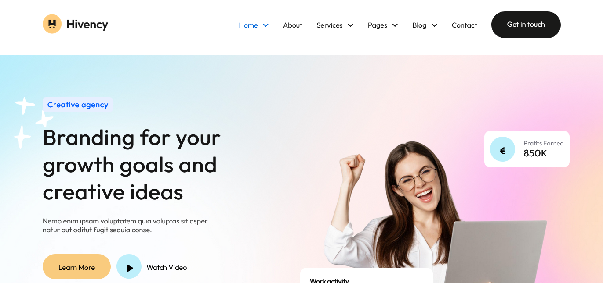
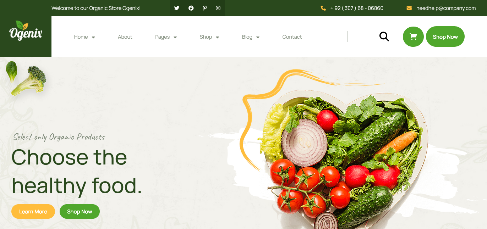
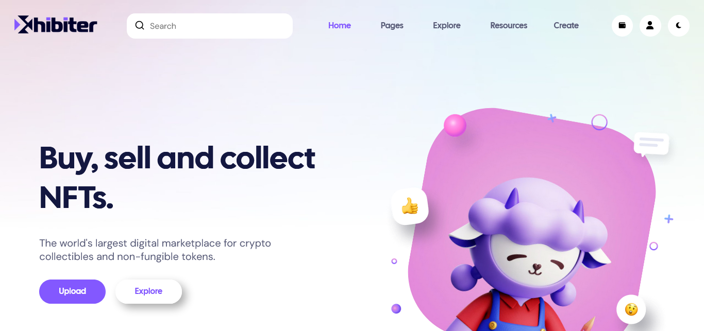
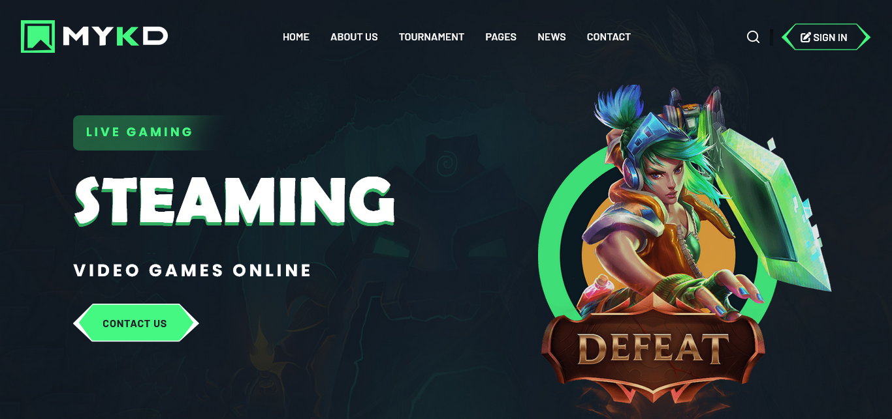
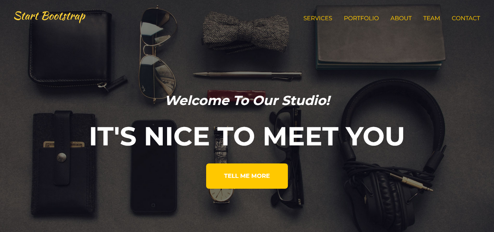
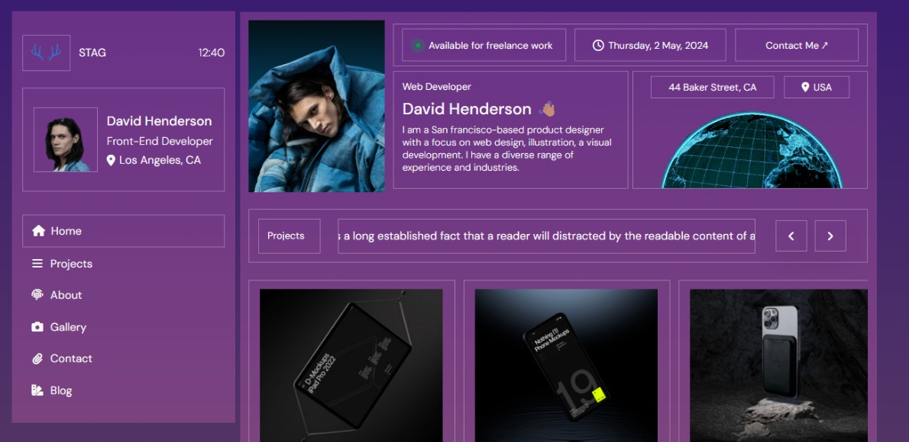

Kontent strategiyası və istehsalı
İdeyadan ssenariyə, montajdan paylaşım planına qədər kontentin tam istehsal prosesi.
Kontent • Strategiya • Texnologiya
Kontent strategiyası, rəqəmsal alətlər, AI və texnologiya (smartfonlar) üzrə yaradıcı işlər. İT və Front-End təməlli yanaşma.
Nə edirəm
Kontent ideyasından auditoriyaya çatdırılmasına qədər məqsədyönlü və praktik yanaşma.
İdeyadan ssenariyə, montajdan paylaşım planına qədər kontentin tam istehsal prosesi.
Qadcetləri, rəqəmsal alətləri və proqramları sadə, anlaşıqlı video formatında təqdim etmək.
ChatGPT, Gemini və Claude kimi alətlərlə araşdırma və kontent istehsalını sürətləndirmək.
Mənim haqqımda
UNEC-də İT üzrə bakalavr təhsilim və Garage Academy-də Front-End hazırlığım kontent yaradıcılığına analitik və praktik yanaşma gətirir. Texnologiyanı anlaşıqlı hekayələrə çevirərək, həm məzmunun ideyasına, həm də onun necə təqdim olunmasına diqqət edirəm.
Kontent araşdırması, planlaşdırılması, vizualları və montajı üçün.
Əlavə təcrübə
Bunlar əsas xidmət istiqamətlərim deyil; şəxsi yaradıcı təcrübəmin əlavə nümunələridir.
AZ və EN dillərində orqanik kontent təcrübəsi · 4,000+ baxış.
AZ, EN və RU dillərində səsli hekayəçilik və temp eksperimentləri.
Digər brend profillərimə Instagram, TikTok və YouTube-da baxın.
Əlavə işlər
Əvvəlki İT təcrübəmdən seçilmiş layihələr. Bu bölmə əsas kontent işlərimdən ayrıdır.

Responsive template project
View Project
Modern, clean template design
View Project
Creative template development
View Project
Theme customization project
View Project
Bootstrap based responsive template
View Project
Creative portfolio template
View ProjectCareer exploration tool including MBTI and Cognitive Functions.
Project inspired by a client business calendar.
Small projects from learning programming languages and the web.
GitHub projectAzerbaijani translation grammar correction
Azerbaijani translation grammar correction
Reported a Pomodoro timer overrun
Suggested avoiding overlap with status-bar items
Requested support for GNOME 44
Reported information about an end-of-life GNOME runtime
Reported that sign-in appeared on every launch